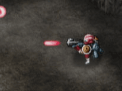

Trois types d’armes principales peuvent être sélectionnées par Alex. Le joueur peut passer de l’une à l’autre comme bon lui semble.

ARME A FEU
Arme lançant un projectile pour attaquer les ennemis.
MISSILE A TETE CHERCHEUSE
Un projectile qui cherche et détruit les ennemis.
GRENADE
Disponible en quantité limitée, c’est un moyen puissant afin de détruire les ennemis dans une zone plus vaste.
Il y a cinq niveaux de puissance de feu. Chaque Générateur de Puissance de Feu (PF) obtenu augmente le niveau de puissance d’un cran. Les dégats subis font également baisser le niveau de puissance d’un cran.
●BOMBE A EFFET DE SOUFFLE
Une bombe à effet de souffle qui a la capacité d’infliger des dégats à l’ennemi sur une plus grande surface que l’arme à feu traditionnelle est aussi à la disposition d’Alex. La taille de l’impact dépend de l’arme principale utilisée. La bombe à effet de souffle peut être obtenue sur la carte.